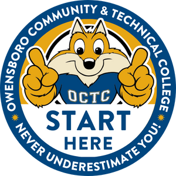

OCTC · START HERE
Learning Tools & Support
Find Blackboard how-tos, technology tips, and OCTC resources to help you with your coursework.

Table of Contents
- 01Learning in BlackboardFind course materials, submit assignments, and check grades and feedback in Blackboard.
- 02Study & Stay on TrackMake online learning work for you, plan your week, understand your grades, and get help with citations.
- 03Library & ResearchFind sources, ask a librarian, and get writing help or tutoring.
- 04Communicate & ParticipateEmail your instructor, join discussions, participate in class, and ask for help when a problem affects your work.
- 05Technology Tips & HelpTroubleshoot browsers, use a Chromebook, find course materials, and get help with course software.
- 06Student SupportFind tutoring, advising, accessibility services, counseling, and help with everyday needs.
- 07AI LiteracyCheck what your assignment allows and decide when and how to use AI responsibly.
- 08Skills for Life & WorkExplore Kentucky’s 10 Essential Skills and see how you’re building them in your courses.
- 09Plan Your TransferExplore KCTCS transfer pathways, university partners, and planning resources. Opens in a new tab.
- 10Student WellnessCheck in with yourself, notice what’s draining your energy, and choose one small next step.
For your course’s requirements and policies, check your syllabus and instructor’s directions.
Suggest an addition or correction: email Stephanie Self.
LAST UPDATED: